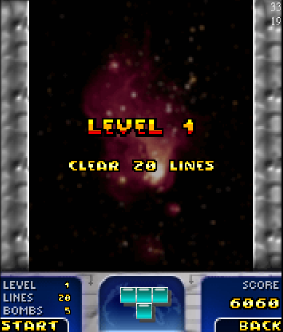

{kind=link}

{kind=link}


Simple Tetris clone with 'detonate tile' feature. Includes an online hiscore.
Using a BBC wallpaper for the background in the IntensiTris and WebTris version.
|
 | |
|
| Title screen | Game started | Tile detonated | After detonation |
Check out the HISCORE.
J2SE build for running IntensiTris via Java Web Start. Requires Java Runtime Environment 1.4 or later. Uses my RunME J2ME emulation layer. Includes full-screen support (Alt-Enter).
| Key | Function |
| UP or W | Rotate tile |
| DOWN or S | Move tile down |
| LEFT/RIGHT or A/D | Move tile left/right |
| SPACE or Q | Drop tile |
| RETURN or E | Detonate tile |
| COMMA or F1 | Left softkey (bottom left menu action) |
| DOT or F2 | Right softkey (bottom right menu action) |
NOTE: All versions assume a screen size of 176x208 pixels. The engine will, however, adapt the screen layout as good as possible to the device specific screen size. Unfortunately this results in several GFX/UI glitches. This scaling feature can be turned off by a configuration value. See the release info below for more information.
If you want a build for your specific phone and/or screen size just send me an email to IntensiTris AT IntensiCode DOT net. I'll see what I can do for you. (Or just wait until I have released this thing on JavaForge and then use it to build a device-specific version yourself.)
There are a few - more or less generic - J2ME releases to be found here.
BasicTris is a version of the game that uses minimal GFX to allow running the game on devices like the RAZR.
IntensiTris is available in three versions:
| Key | Function |
| UP or 2 | Rotate tile |
| DOWN or 8 | Move tile down |
| LEFT/RIGHT or 4/6 | Move tile left/right |
| STAR | Drop tile |
| POUND | Detonate tile |
| LEFT SOFKEY | Left softkey (bottom left menu action) |
| RIGHT SOFTKEY | Right softkey (bottom right menu action) |